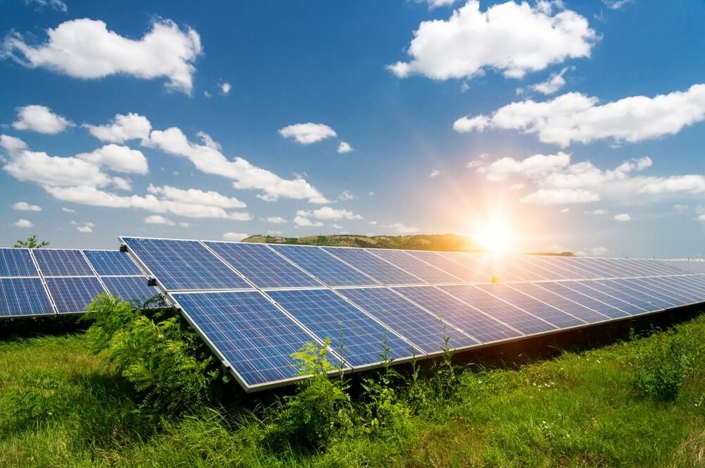
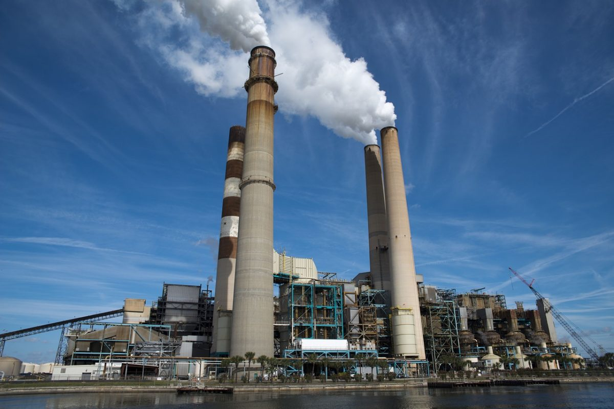
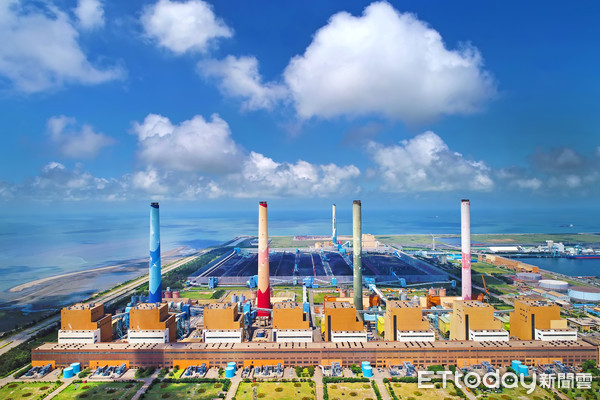

優點：較環保。
缺點：1. 風力不穩定，冬天發電量高於夏天，但夏天才是用電高峰。
2. 風力發電有噪音問題，讓當地居民抗議。
3. 要4,000座風力發電機才能取代核四，占地需環繞台灣一圈。
4. 每度電成本約5.6元/度。
優點：較環保。
缺點：1. 發電量太小，即使全台灣1/3的屋頂都裝上太陽能面版，發電量僅有目前核一、二、三發電量的十分之 一，不足以取代核電。
2. 太陽能發電成本最高，每度約為6到9元。
天然氣發電目前約占總發電量的31.1%。
優點： 乾淨、較環保。 啟動迅速，適合因應用電量調整。
缺點：1. 貴，發電成本約為 4.7元/度。
2. 需要建設天然氣儲存槽，有爆炸的風險。
3. 目前台灣夏季的天然氣存量僅有6-7天，若是遇風貨船無法靠岸，則有限電危機。
火力發電與核能一樣，都是用燃料把水燒成水蒸氣來推動發電機，差別只有燃料的不同。而燃煤發電目前占發電量的38.4%，是發電量最多的發電方式。
優點：煤便宜、取得容易，成本約為2.5元/度。
缺點：「髒」。有毒廢棄物，危害人體健康。根據立委林佳龍提供資料，台中龍井燃煤發電廠，一年約造成500個全死因。
排碳量增加，加速地球暖化。